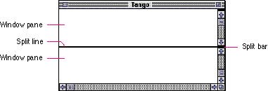
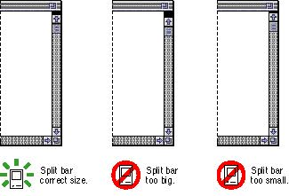
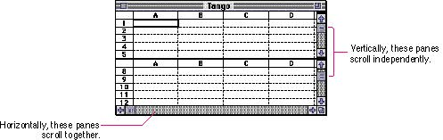

|
Splitting a WindowYou can provide the ability for people to look at different parts of a document simultaneously by implementing a split bar. The split bar is a control, five pixels high by the width of the scroll bar, contained in the scroll bar. Users drag the split bar to separate a document into separate scrolling sections, called window panes. A split line appears to visually separate the panes. (Note that there should a one-pixel space between the two lines that make up the split line.) For example, the user might want to look at the opening paragraphs and review the conclusion of a document in a word-processing program at the same time. In a programming environment, you might want to see the include statements at the beginning of a document while looking at routines in another part of the document. Split windows are useful for copying data from one part of a document and pasting it into another part. The user drags the split bar to a location in the scroll bar where the new pane is to begin. To remove a window pane, the user drags the split bar to within three pixels of the top or right of the scroll bar. Figure 5-40 shows a window split into two panes. The split bar should be large enough for the user to accurately place the pointer on it, but not so large that it attracts attention. Figure 5-41 shows an example of the correct size for a split bar and some comparison sizes.  Window Pane Behavior |
|
|
When you
implement window splitting capabilities, place the split
bar at the top of the vertical scroll bar or to the left of
the horizontal scroll bar, or in both positions if you
support both types of splits. The user can drag the split
bar anywhere along the scroll bar. Implement an outline of
the split line to follow the pointer so that the user can
tell where the new pane will appear. (This is similar to
the outline of a scroll box being moved.) Releasing the
mouse button splits the window into panes there, and
divides the appropriate scroll bar into separate scroll
bars for each pane.
After a single split, there are separate scroll bars for each pane. Usually the panes scroll independently in the orientation opposite of the split. That is, if the split is horizontal, the vertical scrolling is controlled separately for each pane using the two scroll bars along the right of the window. The horizontal scrolling is still synchronous, or locked, using the scroll bar along the bottom of the window. Figure 5-42 shows how window panes scroll, independently or together. |
|
Figure 5-42 Independent and locked scrolling of
window panes
 When the user splits a window, any part of the window's contents obscured by the split line or scroll bar should move down so that it is visible. For example, if the user drags a split bar to create a horizontal split, the window's contents that would have disappeared underneath the split line should scroll down by the height of the split line, plus some additional space. The user can make a selection in one pane, and where the same data appears in another pane, the user can Shift-click to extend the selection. See the section "Editing Text" beginning on page 297 in Chapter 10, for more information on selecting text. The user should also be able to drag to extend a selection and have the pane scroll automatically as an entire window would. Your application should save and restore the location of split lines and the content of window panes whenever the user closes a document that is divided into panes. One Split per OrientationYou can choose to allow only one split in a window. Usually the panes are locked in the direction of the split and the panes move independently in the opposite direction. For example, in a text document if you allow one horizontal split, then the panes move together when the user scrolls horizontally, but the user can scroll to different locations in the vertical direction to see different parts of the content. |